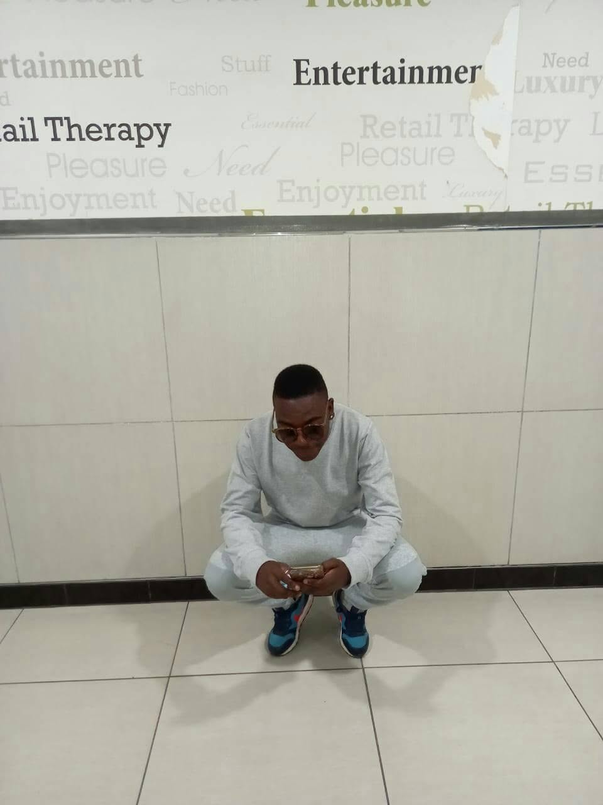

TUKS THE TRUMPETER
Where I Come From
I was born on 08/05/1999 at Tembisa Hospital, in Rabie Ridge Ext 2. My mother’s name is MotlalePule Mogale. My father is Jacob Kotu. But the person who raised me was Adelaide Mahlangu.
From 1999 till 2022, she was home. She taught me how to be a man, how to keep going, and how to believe in myself even when I didn’t.
Chapter 2: 2017 - The Year Everything Changed
I was 18. Life felt kind of “bounded”. Like I had thoughts but no way to say them.
Then Adelaide did something I’ll never forget. She took me to Cash Crusaders in Midrand and bought me my first trumpet. It wasn’t brand new. It had scratches. But to me it looked like gold.
She didn’t just buy me an instrument. She bought me a chance. A week later she took me to State Theatre in Pretoria for music school. Long trips from Tembisa to Pretoria. Early mornings. Sore lips. Headaches.
First day I sounded terrible. Cracked notes, wrong timing, everything. The teacher would say “again” and I’d want to quit. But I kept thinking about Adelaide spending her money at Cash Crusaders for me. So I stayed.
Chapter 3: Learning to Talk Without Words
At State Theatre I learned more than scales. I learned that when you don’t know what to say, you can play it.
Angry? Play loud. Sad? Play slow. Hopeful? Hit the high note. That trumpet became my voice. There were days I wanted to give up. Days my fingers wouldn’t move right. But I remembered Rabie Ridge. I remembered Adelaide. And I’d pick the trumpet up again.
Chapter 4: What Tuks the Trumpeter Really Means
Tuks The Trumpeter isn’t about being perfect. I’m still learning. Tuks The Trumpeter is a kid from Rabie Ridge who got a second-hand trumpet... and decided his story deserved to be heard.
